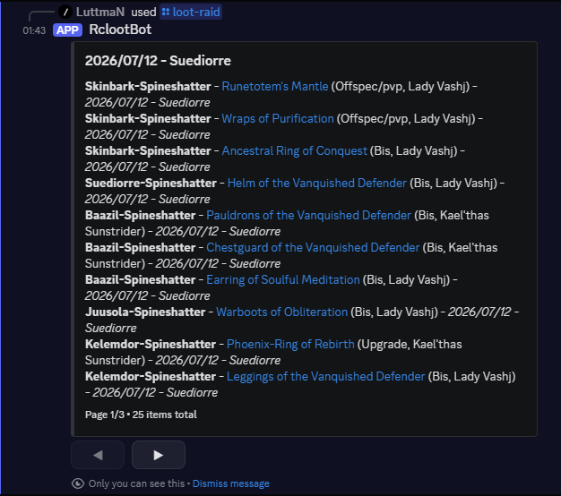
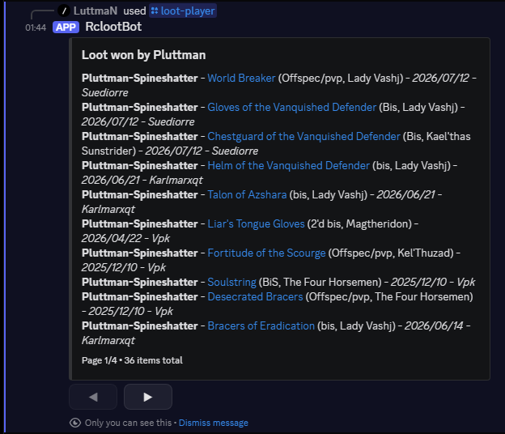

Your loot master pastes one export after raid. WoWLootBot remembers every item, every player, every date, so anyone can look it up later instead of scrolling last month's chat log. Slash commands only, so the channel stays clean.

/loot-raid - items from one raid
/loot-player - everything a player has wonWhy bother
Nobody wants to run a spreadsheet during a raid. WoWLootBot fits into the two-minute window right after the boss dies.
Upload the raw export from RCLootCouncil or Gargul. It's parsed automatically, no reformatting.
Re-upload the same export by accident and nothing gets double-counted.
Restrict uploads to an officer role and, if you like, to one channel.
Every lookup replies only to the person who asked. The channel stays clean.
Supported exports
Drop in whichever your loot council addon gives you. WoWLootBot figures out the rest.
Commands
Type / in any channel the bot can see and Discord will show these with autocomplete.
Read-only. Results are private to whoever asks.
/loot-lastItems from the most recently added raid.
/loot-raidItems from a specific raid, picked from a dropdown.
/loot-playerEverything a player has won.
/loot-itemWho has won a specific item.
/helpA guide to every command, in Discord.
Restricted to an officer role or Manage Server by default.
/loot-addUpload an export. Splits into one raid per date automatically.
/loot-clearDelete one raid, or everything for the server.
/loot-configSet the officer role and, optionally, lock commands to one channel.
Questions
No. There's no paid tier and no usage limit.
Only what's in the loot export you upload (player names, item names, dates) plus the server, channel, and role IDs needed to run the commands. See the Privacy Policy for the full list.
No. Every server's data is kept separate and one server can never query another's.
/loot-clear can remove a single raid, or wipe everything for the server if you'd rather start over.
Any version RCLootCouncil or Gargul supports. The bot only reads the exported text, it doesn't care which expansion or realm it came from.